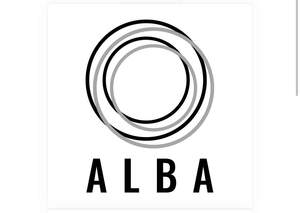

Trade Mark Journal No.2026/008 20 February 2026
UK00004336793 6 February 2026 (25,41)

- Class 25
- Clothing; Knitwear [clothing]; Jackets [clothing]; Ready-to-wear clothing; Woolen clothing; Furs [clothing]; Layettes [clothing]; Clothing layettes; Garments for protecting clothing; Linen clothing; Headbands [clothing]; Headbands for clothing; Gloves [clothing]; Gloves as clothing; Clothes; Aprons [clothing]; Maternity clothing; Kerchiefs [clothing]; Jerseys [clothing]; Denims [clothing]; Shorts [clothing]; Cashmere clothing; Capes (clothing); Oilskins [clothing]; Gabardines [clothing]; Leather (Clothing of -); Silk clothing; Leather clothing; Clothing of leather; Collars [clothing]; Parts of clothing, footwear and headgear; Knitted clothing; Veils [clothing]; Hoods [clothing]; Windproof clothing; Corsets [clothing, foundation garments]; Embroidered clothing; Wristbands [clothing]; Bandeaux [clothing]; Belts [clothing]; Belts for clothing; Rainproof clothing; Waterproof clothing; Casual clothing; Visors [clothing]; Jackets being sports clothing; Jackets (Stuff -) [clothing]; Stuff jackets [clothing]; Bottoms [clothing]; Playsuits [clothing]; Ready-made clothing; Clothing for leisure wear; Trunks being clothing; Woven clothing; Latex clothing; Infant clothing; Leisure clothing; Clothing for sports; Sports clothing; Ties [clothing]; Drawers [clothing]; Drawers as clothing; Athletic clothing; Clothing for children; Muffs [clothing]; Bodies [clothing]; Clothing for babies; Tops [clothing]; Clothing for infants; Weatherproof clothing; Clothing for cycling; Pockets for clothing; Fabric belts [clothing]; Water-resistant clothing; Triathlon clothing; Handwarmers [clothing]; Clothing for skiing; Beach clothing; Thermal clothing; Chaps (clothing); Cowls [clothing]; Men's clothing; Fishing clothing; Dance clothing; Mitts [clothing]; Braces for clothing.
- Class 41
- Instruction in martial arts; Martial arts instruction; Training in martial arts; Teaching of chinese martial arts; Beauty arts instruction; Instruction in the field of the visual arts; Instruction in the field of the performing arts; Jujitsu instruction; Karate instruction; Taekwondo instruction; Aikido instruction; Judo instruction; Educational and instruction services relating to arts and crafts; Kendo instruction (Japanese fencing instruction); Boxing instruction; Instruction in music; Music instruction; Hapkido instruction; Calligraphy instruction; Shodo instruction; Education and instruction; Dance instruction; Instruction in sports; Yoga instruction; Gymnastic instruction; Japanese chess instruction (shogi instruction); Gymnastics (Instruction in -); Gymnastics instruction; Instruction in gymnastics; Education academy services for teaching art history; Instruction; Instruction in ballet; Language instruction; Training and instruction; Painting instruction; Physical education instruction; Photography instruction; Pilates instruction; Operating of martial arts' schools; Hairdressing instruction; Instruction in circuit training; Educational instruction; Tennis instruction; Dance instruction for children; Providing information about martial arts match results; Provision of gymnastic instruction; Entertainment, education and instruction services; Instruction in dancing; Keep-fit instruction; Musical instruction services; Aerial fitness instruction; School services for the teaching of art; Sports instruction services; Education and instruction services; Instruction in golfing skills; Exercise instruction; Cooking instruction; Instruction of forestation skills; Dance instruction for adults; Education services related to the arts; Sado instruction [tea ceremony instruction]; Soccer instruction; Educational and instruction services relating to sport; Basketball instruction; Educational services for the dramatic arts; Snowboard instruction; Sports tuition, coaching and instruction; Abacus instruction; Instruction in languages; Sailing instruction; Piano instruction; Bookkeeping instruction; Providing instruction in the field of dance; Ice-skating instruction; Golf fitness instruction; Instruction courses relating to physical fitness; Fitness and exercise instruction; Drawing instruction; Chiropractic instruction; Instruction in etiquette; Physical fitness instruction; Instruction in sporting activities; Provision of courses of instruction relating to sport; Instruction services; Provision of medical instruction courses; Instruction in the writing of computer programs; Conducting of performing arts entertainment; Instruction courses relating to health; Education and training in the field of music and entertainment; Golf instruction; Instruction in singing; Baseball instruction; Sewing instruction; Providing performing arts theater facilities; Provision of courses of instruction in languages; Education academy services for teaching languages; Diving instruction; Instruction services relating to sports; Provision of courses of instruction; Courses of instruction (Provision of -); Ski instruction; Winter sports instruction; Self-awareness courses [instruction]; Instruction in group exercise; Education, teaching and training; Instruction in nutrition [not medical]; Ski-ing instruction; Education academy services for teaching acting; Swimming instruction; Organizing cultural and arts events; Provision of courses of instruction in self awareness; Vocational education relating to self-defence; Vehicle-driving instruction; Education services for imparting language teaching methods; Instruction courses related to slimming; Fishing instruction; Instruction in weight training; Flying instruction; Guitar instruction; Instruction courses relating to sporting activities.
Thomas Bracher